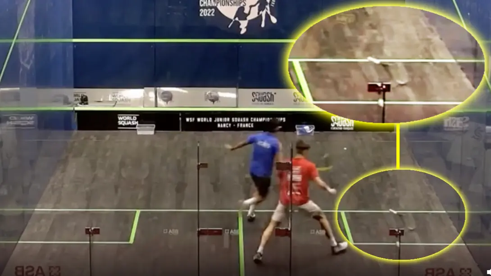

What Happens If You Drop Your Squash Racket In The Middle Of A Rally?
The answer is nothing happens, unless it causes a distraction to your opponent or the ball hits the racket when it is on the floor.
Over the years I have seen this happen and sometimes a minor disagreement ensues with the player who didn’t drop the racket arguing that it is their point, with the “dropper” (not the proper term) saying it’s not. As I said in the introduction, the player who drops their racket is allowed to pick it up and continue playing.
Most times there is no distraction, unless the racket falls in the path of the other player or hits them etc. The interesting point comes when a player throws their racket and the ball hits the strings and the ball hits the wall correctly. Unfortunately, this is NOT allowed as the rules specifically say the racket must be in the hand when the ball is hit. Personally, I think we should change that as it could introduce some crazy shots!
One last point to mention. If ANYTHING else falls onto the floor, it’s either a let or a point to the other player. When I say ANYTHING, I mean anything you have. For example, your watch, you googles etc. If they are yours and they fall onto the floor you lose the point. Recently there was a match between Joel Makin and Paul Coll. A sticker from Paul’s racket fell on the floor during the rally and Joel notice it after the rally and was awarded the point. if anybody knows the exact match and details, please let me know.
If it’s not yours, e.g. something from the court or spectator, then most times a let is played. There are some exceptions though, so read the rules if you are curious.
Dropping Tony
I don’t know if I lived in a particular gangster area or time period, but I seemed to play in a period of cheaters! At one club I played at, I think it was Mill Hill, probably long gone now and turned into flats, there was a guy called Tony, whose nickname was “Dropping Tony”. He would drop his racket at least once a game always just when you were about to play a winner and would claim we needed to play a let! other times he would move past you and drop his racket and claim you knocked it out of his hand and claim a stroke. I hated playing him – slimy toerag.
Real World Example
Here is a real world example, featuring Rowan Damming and Paarth Ambani, during the World Junior Squash Championships 2022. I’ve cut the rally short, but you can see it on the WSF Twitter feed if you want to. Rowan goes on to win the rally – Oh! sorry SPOILER!
No racket? No problem! 👌
— World Squash (@WorldSquash) August 11, 2022
🇳🇱 Rowan Damming loses his racket, but wins the point in his WSF World Junior Squash Championship match against India's Paarth Ambani#WSFJuniors pic.twitter.com/HN2pf0GKhx
Actual Rules
Here are the actual rules taken from the World Squash Federation’s Singles Rules 2019.
13 FALLEN OBJECT
13.1 A player who drops a racket may pick it up and play on, unless the ball touches the racket, or distraction occurs, or the Referee applies a Conduct Penalty.
13.2 A striker who drops the racket because of interference may request a let.
13.3 A non-striker who drops the racket because of contact during the striker’s effort to reach the ball may request a let, and Rule 12 (Distraction) applies.
13.4 If any object, other than a player’s racket, falls to the floor during a rally, play must stop; then:
13.4.1 if the object fell from a player without any contact with the opponent, the opponent wins the rally;
13.4.2 if the object fell from a player because of contact with the opponent, a let is allowed, unless the striker has struck a winning return, or requests a let for interference, in which case Rule 8 (Interference) is applied;
13.4.3 if the object falls from a source other than a player, a let is allowed, unless;
13.4.4 the striker’s winning return was interrupted, in which case the rally is awarded to the striker;
13.4.5 if the object was not seen until the rally ended and had no effect on the outcome of the rally, the result of the rally stands.
Final Thoughts
Nobody should purposefully drop their racket, but as long as it doesn't intefere or distract an opponent, you carrying on playing.
Continue Reading
• Previous: Should Beginners And New Players Worry About Squash Rackets?
• Next: Which Squash Ball Should New Players Use?
• Random: Take A Chance!
• Popular: A Brief Introduction To Shot Selection In Squash